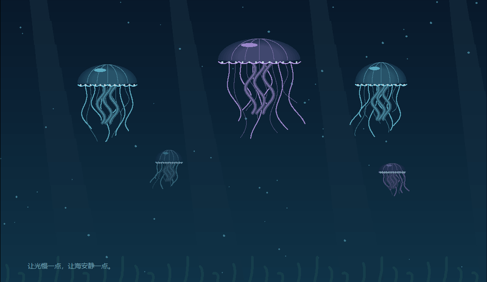

A LITTLE GALLERY, MADE WITH PYTHON
几行代码，
生长出小世界。
点亮一场烟花，养一池锦鲤，让一棵树走过四季。
这里收藏可以欣赏、可以动手、可以继续生长的灵感。
- 24
- 个代码小世界
- 10 + 14
- 互动展品与创意原作
- Python
- 标准库即可运行
GALLERY / IN MOTION01—24

从第一条线，到完整的小宇宙
Python ＋ Turtle ＋ Tkinter / 绘画 · 动画 · 小游戏
THE COLLECTION
选一个世界，开始探索。
每张画面背后，都有一份可以打开的代码。
网页展示预览，互动体验请在电脑上运行。
预览以程序运行截图为主；「温柔便签」为原文排版示意，「月饼装盒计算」展示实际文字输出。
SMALL IDEAS MATTER
第一颗爱心，也值得被收藏。
画廊保留了 14 个创意原作：圆弧、雨伞、时钟、风车，还有一个月饼计算器。把原来的分形树与「一树四季」放在一起，就能看见一个想法怎样长出颜色、风和互动。
从一个参数开始，改出你的版本MAKE IT YOURS
把画廊，带到你的电脑。
01
准备 Python
使用 Python 3.9 或更新版本，并安装 Tkinter。作品运行只需 Python 标准库。
02
下载并打开画廊
解压 ZIP。Windows 双击 start.bat；也可在项目目录运行右侧命令。
03
选作品，玩一玩，再改一改
在桌面画廊搜索作品。互动展品可按空格暂停、R 重来、H 收起说明、F11 全屏。
在项目目录中运行
# 打开包含 24 款作品的桌面画廊 $ python run.py # 直接点亮一场烟花 $ python run.py --demo 01 # 查看列表 / 检查环境 $ python run.py --list $ python run.py --check
系统使用 python3 时，请替换命令中的 python。
桌面界面已在 Windows 验证。macOS / Linux 需要支持 Tk 的 Python 和桌面显示环境，完整界面体验尚待这些平台验证。查看运行说明 ↗